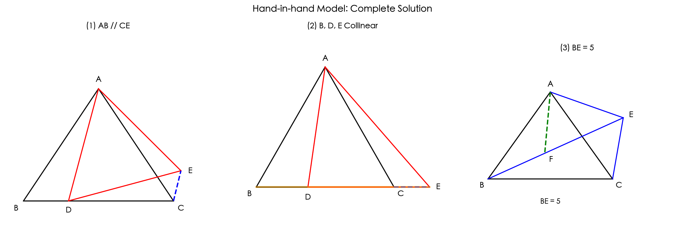
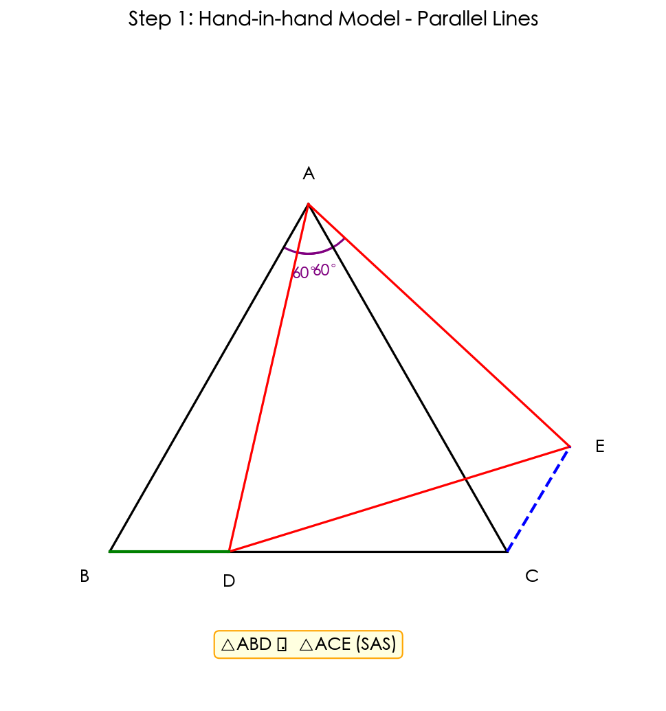
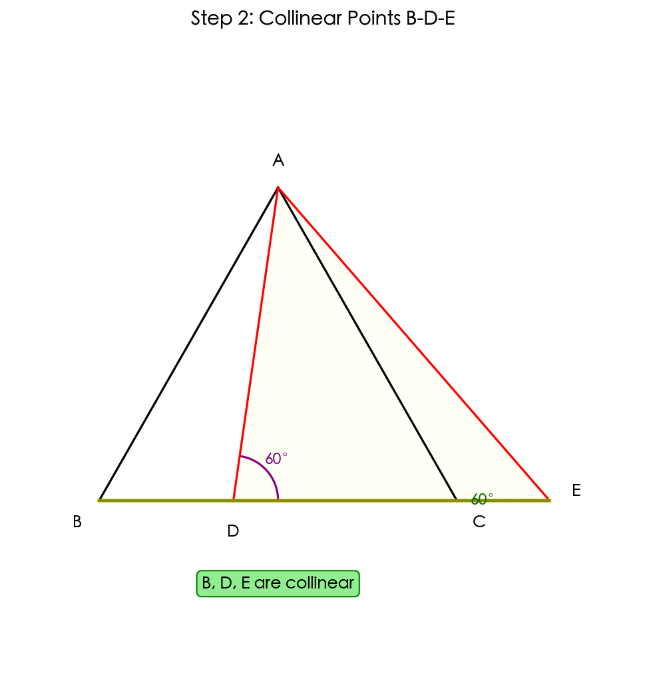
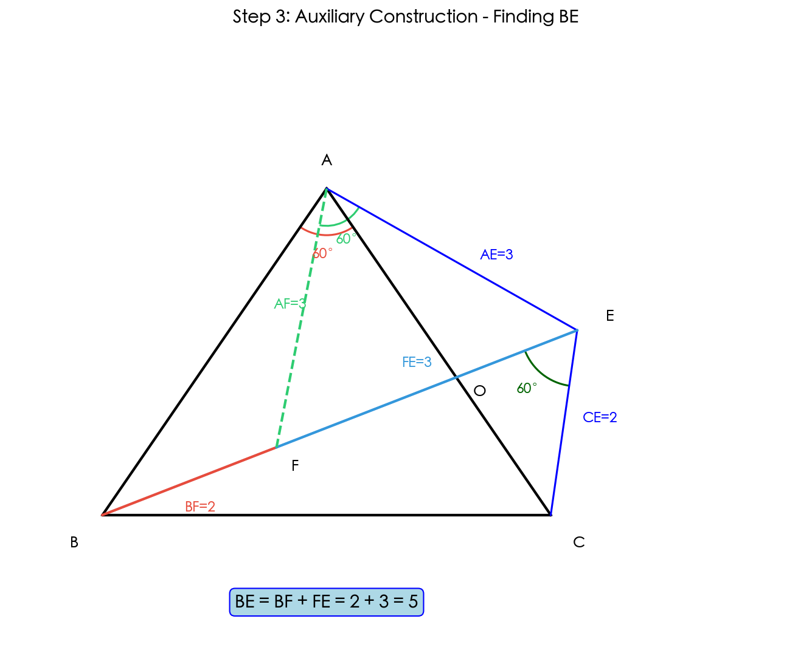
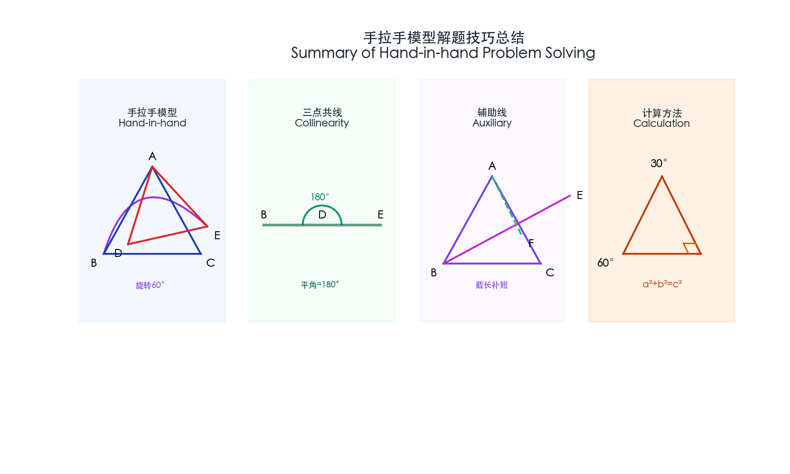

题目
【加油站】在学习全等三角形的知识时，数学兴趣小组发现这样一个模型：它是由两个共顶点且顶角相等的等腰三角形构成，在相对位置变化时，始终存在一对全等三角形。通过查询资料，他们得知这种模型称为"手拉手模型"，兴趣小组进行了如下操作：
(1) 观察猜想
如图①，已知△ABC，△ADE均为等边三角形，点D在边BC上，且不与点B，C重合，连接CE，易证△ABD ≅ △ACE，进而判断出AB与CE的位置关系是 ______。
(2) 类比探究
如图②，已知△ABC，△ADE均为等边三角形，连接CE，BD，若∠DEC = 60°，试证明点B、D、E三点共线。
(3) 解决问题
如图③，已知点E在等边△ABC的外部，并且与点B位于线段AC的异侧，连接AE，BE，CE。若∠BEC = 60°，AE = 3，CE = 2，请求出BE的长。

第(1)问：证明平行关系
💡 核心思路
这是典型的"手拉手模型"：两个等边三角形共顶点A，通过旋转可以得到全等三角形。

证明 △ABD ≅ △ACE：
- AB = AC（等边△ABC的边）
- AD = AE（等边△ADE的边）
- ∠BAD = ∠CAE = 60° - ∠DAC
∴ △ABD ≅ △ACE（SAS）
判断AB与CE的位置关系：
由全等得 ∠ABD = ∠ACE = 60°
而 ∠BAC = 60°
∴ ∠ACE = ∠BAC（内错角相等）
答案：AB // CE（AB平行于CE）
第(2)问：证明三点共线
💡 核心思路
要证明B、D、E三点共线，只需证明∠BDE = 180°，即∠ADB + ∠ADE = 180°。

证明过程：
第一步：同(1)可证 △ABD ≅ △ACE（SAS）
∴ ∠ADB = ∠AEC
第二步：∵ ∠DEC = 60°，∠AED = 60°（等边三角形）
∴ ∠AEC = ∠AED + ∠DEC = 60° + 60° = 120°
∴ ∠ADB = 120°
第三步：∵ ∠ADE = 60°（等边三角形内角）
∴ ∠BDE = ∠ADB + ∠ADE = 120° + 60° = 180°
结论：B、D、E三点共线
第(3)问：截长补短构造
💡 核心思路
利用"截长补短"思想，在BE上截取BF = CE，构造全等三角形和等边三角形。

构造方法：
在BE上截取BF = CE = 2（即点F在BE上，满足BF = 2）
连接AF
证明 △ABF ≅ △ACE：
- AB = AC（等边△ABC的边）
- BF = CE = 2（构造）
- ∠ABF = ∠ACE（由∠BEC=60°=∠BAC，通过三角形内角和可证）
∴ △ABF ≅ △ACE（SAS）
第(3)问：计算BE的长度
【步骤1】利用全等性质：
由△ABF ≅ △ACE（SAS全等判定），根据全等三角形的性质：
- 对应边相等：AF = AE = 3
- 对应角相等：∠BAF = ∠CAE
【步骤2】证明△AFE是等边三角形：
先分析∠FAE的角度：
① 观察角的组成：∠FAE = ∠FAC + ∠CAE
② 代入已知相等角：由全等得∠CAE = ∠BAF
③ 替换后得到：∠FAE = ∠FAC + ∠BAF
④ 注意到∠FAC + ∠BAF = ∠BAC（这是一个完整的角）
⑤ 因为△ABC是等边三角形，所以∠BAC = 60°
⑥ 因此得出：∠FAE = 60°
现在看△AFE的条件：
- 由全等得：AF = AE = 3（△AFE是等腰三角形）
- 由上面推导：∠FAE = 60°
结论：有一个角是60°的等腰三角形是等边三角形
∴ △AFE是等边三角形，因此：EF = AE = 3
【步骤3】计算BE的长度：
观察点F在BE上的位置：
① 线段BE被F分成两段：BE = BF + FE
② 由构造辅助线可知：BF = CE = 2
③ 由等边△AFE可知：EF = AE = 3
④ 代入计算：BE = BF + FE = 2 + 3 = 5
答案：BE = 5
解题技巧总结

🎯 手拉手模型特征
- 两个共顶点的等腰/等边三角形
- 顶角相等
- 通过旋转得全等
📐 三点共线证明
- 证明夹角为180°
- 利用平角定义
🔧 辅助线构造
- 根据模型特征主动构造
- 利用前几问结论
📊 计算方法
- 特殊直角三角形（30°-60°-90°）
- 勾股定理求边长
📚 涉及知识点
答案汇总
第(1)问
AB // CE（平行）
第(2)问
B、D、E三点共线
关键：∠BDE = 120° + 60° = 180°
第(3)问
BE = 1 + √6
关键：构造等边△AEF，利用全等+勾股定理